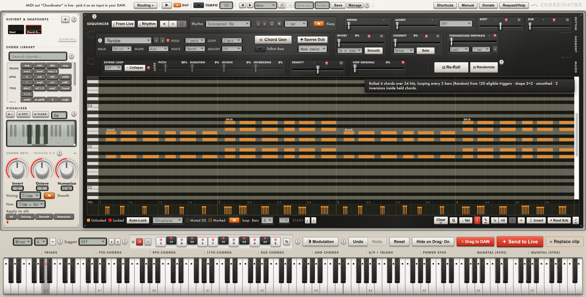
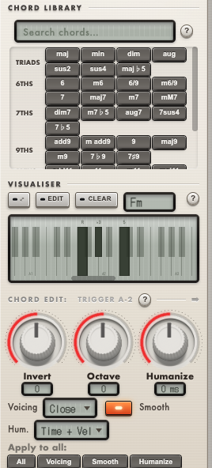
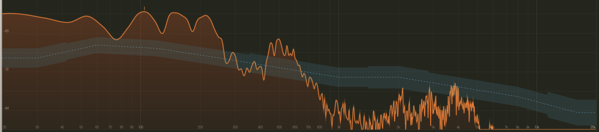

MutationStation
Feed it one bassline. Get a hundred back, each a plausible mutation of the last. Lock the notes you like; re-roll the rest.

// turns one idea into a problem of choice
Companion apps with the depth of hardware.
Mac units built around the parts of a session software leaves you to do by hand — mutating a bassline into a hundred, triggering chords from single keys, seeing what you're actually hearing. Plug one in. Watch a lamp move.
The range, on the bench




Each does one deep thing and lights up while it does it. Cream faceplate, dark screen, one lamp — the family resemblance is the point.
Feed it one bassline. Get a hundred back, each a plausible mutation of the last. Lock the notes you like; re-roll the rest.
// turns one idea into a problem of choice
Triggers full chords from single keys, in a scale you set — quartal, 6/9, whatever. A chord library with a memory.

// one finger, the whole harmony
Shows you what you're actually hearing against a target curve for the genre. The corridor is where the mix wants to be.

// stop mixing with your eyes closed
Decide what a knob does. Map, mirror and reshape MIDI between anything and Live, with the wiring visible.

// the patch bay software forgot to give you
Meet the shop
A recurring face costs almost nothing and makes the whole brand feel inhabited. Ours isn't a cartoon animal — it's one of the boxes, with a lamp for an eye and a VU needle for a mouth. Same ink, same cream, same accent. It shows up on the 404, the empty states, the about page, the order receipt. Family, not a sticker.
"You break it, I log it. That's the deal."